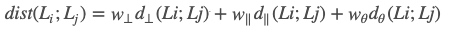
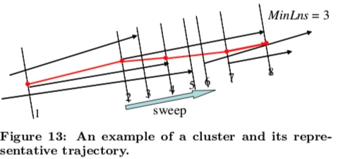

工具篇
工欲善其事必先利其器
主流的深度学习框架有
| tool | 公司 | 特性 |
|---|---|---|
| tensorflow | ||
| pytorch | ||
| keras | ||
| caffe | 伯克利 | |
| paddlepaddle | 百度 | |
| mxnet |
Keras 是基于tensorflow或者Theano(已不维护)封装的高阶接口，tensorflow2.0中现在已经包含Keras
1. Tensorflow
TF-Slim、TFLearn、Keras和TensorLayer
TF-Slim、TFLearn、Keras和TensorLayer都是尝试简化TensorFlow/Theano的工具，是对TensorFlow/Theano的高层封装，API实现更加的工程化
tensorflow2.0 已经将这些合并整理了，官方推荐的是keras的api
https://tensorflow.google.cn/tutorials/images/transfer_learning
https://github.com/balancap/SSD-Tensorflow
2. tensorhub
官方地址 https://hub.tensorflow.google.cn/ 类似于dockerhub，汇集了各种分享的模型，可供下载使用。
主要包括 tezt embeddings, image classification models and more
安装
pip install --upgrade tensorflow-hub
比如图像分类相关的 https://hub.tensorflow.google.cn/google/collections/image/1
google后来提取的 EfficientNet, 调整模型的深度，宽度等参数。https://hub.tensorflow.google.cn/google/collections/efficientnet/1
1.对新样本predict
classifier_url ="https://tfhub.dev/google/tf2-preview/mobilenet_v2/classification/2" #@param {type:"string"}
IMAGE_SHAPE = (224, 224)
classifier = tf.keras.Sequential([
hub.KerasLayer(classifier_url, input_shape=IMAGE_SHAPE+(3,))
])
# 新样本
grace_hopper = tf.keras.utils.get_file('image.jpg','https://storage.googleapis.com/download.tensorflow.org/example_images/grace_hopper.jpg')
grace_hopper = Image.open(grace_hopper).resize(IMAGE_SHAPE)
grace_hopper = np.array(grace_hopper)/255.0
result = classifier.predict(grace_hopper[np.newaxis, ...])
result.shape
2.simple迁移学习
image_generator = tf.keras.preprocessing.image.ImageDataGenerator(rescale=1/255)
image_data = image_generator.flow_from_directory(str(data_root), target_size=IMAGE_SHAPE)
## 下载不包含top classification layer的model
feature_extractor_url = "https://tfhub.dev/google/tf2-preview/mobilenet_v2/feature_vector/2" #@param {type:"string"}
feature_extractor_layer = hub.KerasLayer(feature_extractor_url,
trainable= False,
input_shape=(224,224,3))
model = tf.keras.Sequential([
feature_extractor_layer,
layers.Dense(image_data.num_classes)
])
model.summary()
# 剩下的和正常的模型训练过程一样
其command line 工具 https://github.com/tensorflow/hub/tree/master/tensorflow_hub/tools/make_image_classifier
make_image_classifier \
--image_dir my_image_dir \
--tfhub_module https://tfhub.dev/google/tf2-preview/mobilenet_v2/feature_vector/4 \
--image_size 224 \
--saved_model_dir my_dir/new_model \
--labels_output_file class_labels.txt \
--tflite_output_file new_mobile_model.tflite
应用案例
Learning and Classification of Trajectories in Dynamic Scenes: A General Framework for Live Video Analysis
作者的通用方法：topological scene 描述
用Graph的方法，nodes表示POI，edges表示活动的path，将这个称作POI/AP方法
(1)POI
有两类POI，一类是进/出时候（这种可以通过轨迹数据的开始和结束点确定），一类是逗留的点(这种可以通过算法识别出来)
这些区域可以通过混合高斯模型进行估计\(\sum w_iN(u_i,\Sigma_i)\)
(2)route clustering
- fuzzy C means
- 聚完后有些类别可能会比较详细，还需要再进行一步route mergeing操作. 如果两个类之间的dtw距离均足够小，就认为是一类
(3) path modeling
HMM model
===> zzz
应用的时候一个是实时预测，可以用概率图，实时给出其到每个路径的概率。
1. indoor trajectory mining
1 preprocessing
- 跳楼层问题，1-3
- 空间异常点
- 排除不感兴趣的点，电梯，。
- 数据压缩，相同坐标的点
2 转化为semantic trajectory
即将坐标转为店铺id
trajectory segmentation
轨迹切分按照方法来讲，大致分为三类:
- 无监督的： 比如通过聚类的方法 TRACLUS,SMOT, CN-SM0T,
- 有监督的L=:
- 半监督的
切分效果的评估：
(1) 基于无监督的聚类方法的评估average purity and average coverage.
论文举例
(0) interpolation based change detection
OWS(Octal Window Segmentation)切分方法，作者的出发点：当一个运动的物体其运动状态发生改变时候，因为有惯性，他会超出之前的预期。通过定义的误差函数找到这些“拐点”从而将轨迹进行切分。
Poi
semantic scene model
POI点
- 轨迹的开始/结束
- 逗留
- 其他自己定义的 learning path
对聚出来的每一个类学出来一个path
HMM 【16】【22】【55】
分析应用
- 分流分析： 流量统计、闲逛人群 【21】
速度分析
后续的path分类
异常点检测

实时预测
交通冲突
Trajectory Clustering: A Partition-and-Group Framework
作者出发点不是从全局出发，因为全局上不相似可能在片段是是相似的，尤其是在当只对某些片段感兴趣的时候。作者采用了先partition再group的方法。这种方法的优势:能发现common sub-trajectory。其核心思想如下.github上的一个实现： https://github.com/MillerWu2014/trajectory-cluster
partition-and-group framework

主要步骤如下
(1) 轨迹的距离度量
两条轨迹的距离会从三个方面进行度量：
- 垂直距离
- 平行距离
- 角度距离

最终的距离是以上三种的加权

(2) 轨迹切分
轨迹切分，即用尽量少的点，能尽量代表原来轨迹的信息(减少与原始轨迹的误差)。这里主要是通过MDL(最小描述长度)算法。 L(H)+L(D|H), partition后的轨迹长度 + 原始轨迹与partition后的轨迹的距离。
MDL(麦当劳)原理:是研究通信编码的时候提出的，对于给定的一组数据D，为了要对其进行保存，一般都会采用某种模型H对其进行编码压缩。同时为了能够正确恢复这些数据，将模型也保存起来。所以需要保存的数据长度=保存模型的数据长度 + 这些数据压缩后的长度. L(H) + L(D|H)
(3)cluster
对于每一个segment，相当于是一个数据点，然后采用基于密度的聚类。
(4) representative trajectory of a cluster
对于聚好类的一堆曲线，需要找到其有representative的曲线来表示这一类的特点。

(2)
Copyright © 2015 Powered by MWeb, Theme used GitHub CSS.